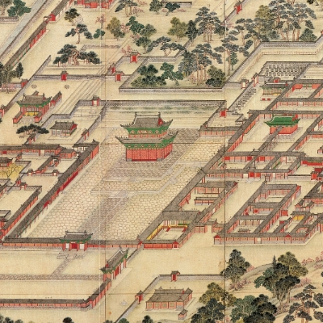
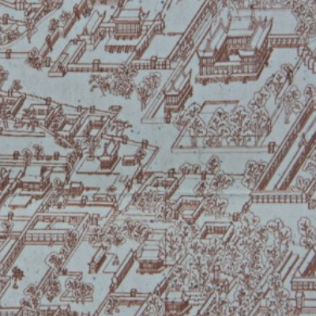
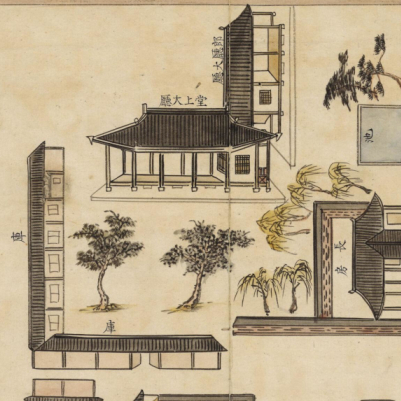
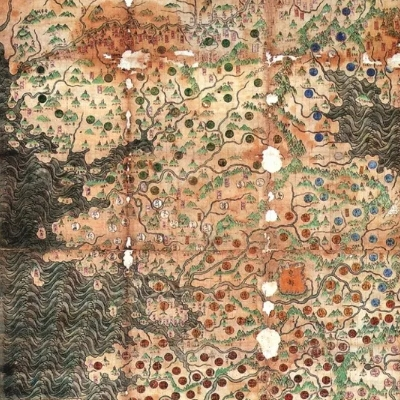

조선시대 배치도
조선시대 건물의 배치도를 검색할 수 있습니다.
You can search for maps of buildings from the Joseon Dynasty.






- 한글로 검색하는 게 좋습니다.
- 명칭의 일부만 검색해보세요. (비현합, 비현각 → '비현'으로 검색)
- 인근의 다른 곳을 찾은 후 '전체 선택'으로 주변을 확인해보세요.
| 명칭 | 한자 | 위치 | 분류 | 이미지 |
|---|